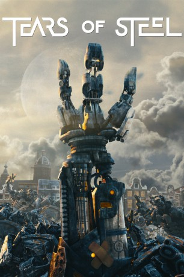

#4748 Tears of Steel
 
 IMDB-Wertung: 5.6 / 10
IMDB-Wertung: 5.6 / 10  Metascore: 0
Metascore: 0 
Tears of Steel ist ein computergenerierter Kurzfilm, der im Rahmen des Filmprojektes Mango entstanden ist. Dieses Projekt wurde durch die Blender Foundation produziert und dient der Weiterentwicklung und Erprobung freier Software, insbesondere der 3D-Grafiksoftware Blender. Der Film wurde am 26. September 2012 auf der Projekthomepage veröffentlicht.
Jahr: 2012
Dauer: 12 Minuten
FSK:
Land: Niederlande Studio: Blender FoundationTonspuren:
Untertitel:
Auflösung: 1080p (1920x800) Größe: 704 MB
Genre: Kurzfilm, Sci-Fi
Regisseur: Ian Hubert
Drehbuch: Ermek Tursunov
Soundtrack:
Darsteller:
 Derek de Lint als Old Thom
Derek de Lint als Old Thom- Sergio Hasselbaink als Barley
- Rogier Schippers als Captain
- Vanja Rukavina als Thom
- Denise Rebergen als Celia
- Jody Bhe als Djenghis
Datei: X:\Kinder Collections\Blender Open Source\Tears of Steel (2012, FSK, 1920x800).mov seit 11.11.2016
Festplatte: Kinder-Filme+Trick
 Es gibt insgesamt 9 Filme in der Gruppe 'Kinder Collections\Blender Open Source'
Es gibt insgesamt 9 Filme in der Gruppe 'Kinder Collections\Blender Open Source'